On left-facing wall-mounted candles, the "candle flame glow" character blocks (with cycling attributes) don't span the entirety of the flame part of the
graphic bitmap. The image below highlights the two character blocks that are assigned as "glowing"; there is a single pixel column in the flame bitmap
that lies to the left of this, and therefore never glows:
The reason for this is that after the first (right-most) flame character block is assigned as glowing, the instruction at 28803 increases the address
in HL (i.e. advances right by one character block into empty space). An empty (i.e. all bitmap bits reset) character block is then assigned as glowing
but there are no set bits for the glow effect to influence.
In order to fix this bug, it is necessary to ensure that after assigning the right-most character block of the flame bitmap as glowing, HL is DECREASED
(i.e. moved LEFT by one character block). That way, the character block to the left, which contains a very noticeable single column of set pixels, will
glow in sync with the rest of the flame. The fix involves updating the instruction at 28803 from INC HL to DEC HL, i.e.:
POKE 28803,43
"THERE IS NOTHING IN THIS ROOM" Message Never Shown
In the routine at 30222 that processes Magic Knight's "PICK UP OBJECT" command, the section of code starting at 30234 is intended to count the
number of objects present in Magic Knight's current room. This count of objects is accumulated in the C register, and after the total (copied into A) is
compared with zero at 30259, a conditional jump occurs to 34436 to display the "THERE IS NOTHING IN THIS ROOM" message window should the total be
zero. Unfortunately this does not work as intended because the C register is not initialised to zero at the beginning of the count. The instruction at
30238 actually initialises C to 128, so the count can never equal zero. Additionally, this same instruction should initialise B (the number of objects
to check to determine whether they are in Magic Knight's current room) to 50 as there are 50 objects in the game; instead B is initialised to 12. So as
it stands, this routine only counts the number of objects among the first 12 that are in Magic Knight's current room, and adds this total to 128.
Therefore it is clearly impossible for the count to hold any value outside the range 128 - 140 (i.e. it is never zero), so the "THERE IS NOTHING IN THIS
ROOM" message is never shown. Instead, the "THERE IS NOTHING NEAR ENOUGH" message is shown:
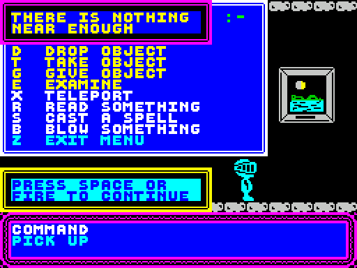
To fix, and ensure that B and C are initialised to 50 and 0 respectively:
POKE 30239,0
POKE 30240,50
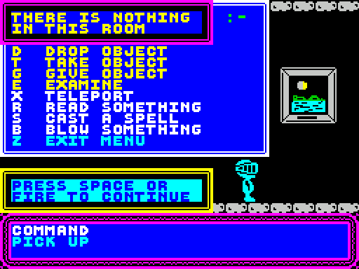
This bug is also present in Knight Tyme
Light In The Dark
There are two rooms in the game, The Little Bottle and The Big Bottle, where the "lights" are turned out, yet both have ceiling candles that are clearly
alight and glowing:
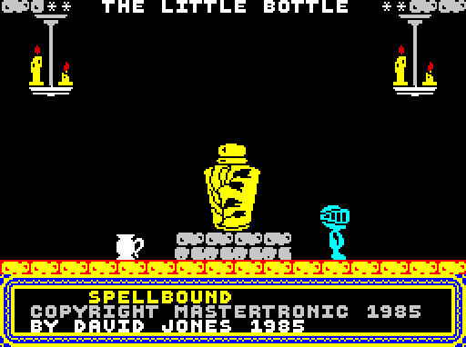
To remove these ceiling candles, the room layout data for the two rooms can be modified. Fortunately in both cases, the instructions to display the
ceiling candles are near the end of the layout data, so the fix requires relatively few POKEs:
The Little Bottle (52869):
POKE 52896,230 (to bring instruction from 52902 forward)
POKE 52897,0 (to bring End Marker from 52903 forward)
The Big Bottle (52709):
POKE 52736,230 (to bring instruction from 52742 forward)
POKE 52737,0 (to bring End Marker from 52743 forward)
In each room's case, doing this will bring the room's layout data end marker forward several bytes, and will leave some former room layout data bytes
redundant. This should not impact the game's operation, however. Unfortunately the sixth room on the 1st Floor uses the same room layout data as the Big
Bottle, so it too will lose its ceiling candles as a result of this fix.
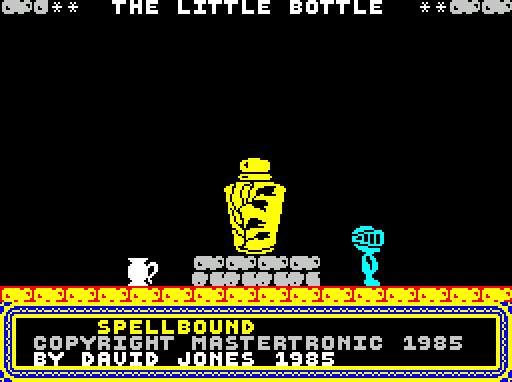
Wand of Command Attributes
When Magic Knight walks past the Wand of Command, the "sparklies" at its top-left corner acquire his attribute:
This occurs because the "Preserve Attribute" flag is not set for the top-left character block of the Wand of Command in its graphics lookup table entry.
The terrain interaction flag value that is set at 42751 is 17, which corresponds to preserving attribute on the top-right and bottom-right
character blocks. In reality, the Wand of Command (unlike the Bottle and Engraved Candle which correctly have a value of 17 here) spans all four
character blocks. This being the case, all four character blocks should have their attribute preserved. Of course, it is entirely possible that this was
intentional, perhaps to show Magic Knight exerting some kind of magical influence over the wand as he walks by! To fix:
POKE 42751,85
Magic Talisman Attributes
The Magic Talisman is afflicted with exactly the same issue. It spans all four character blocks, however its Terrain Interaction Parameter (17)
preserves only the attribute on the two rightmost character blocks. To fix:
POKE 42767,85
Gold Goblet Attributes
As in the previous two bugs, the Gold Goblet also has incorrectly set terrain interaction flags, but in a complementary fashion to the previous two
bugs:
The Goblet is only one character wide (or at least the set bits in the graphic data at 62292 are confined entirely to the two rightmost character
blocks). This being the case, the goblet should have a value of 17 for its terrain interaction flags (like the Bottle and Engraved Candle which also
reside solely in the rightmost character blocks of the 2x2 graphic data). The actual value for the Goblet, however, is 85, which preserves the
attributes on all four character blocks. The effect of this can be seen as Magic Knight walks into the space occupied by the Goblet's leftmost character
blocks and which appear empty, yet he is affected by the Goblet's attribute. To fix:
POKE 42771,17
Doing A Lot More Than Breaking A Wall!
Initially, the left half of The Wall is quite featureless:
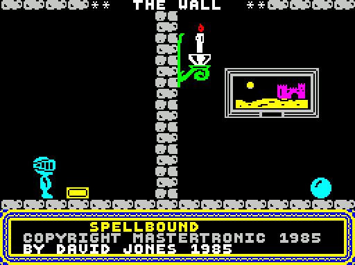
After Elrand helps, not only is the Wall broken, but two portraits appear from nowhere on the left side of the room!
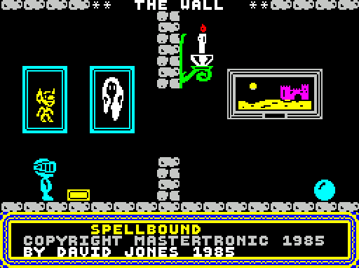
These portraits of Florin and Banshee are also present in the room immediately to the left of The Wall, and should not appear twice. In order to fix
this, the room layout data for the post-Elrand-helping version of The Wall needs to be modified to eliminate the instructions responsible for displaying
the portraits at 53345 and 53350:
POKE 53345,0 (to bring End Marker from 53355 forward)
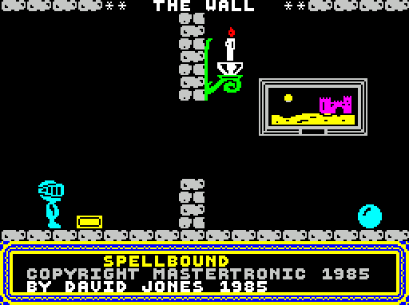
Appearing BEFORE a Thick Puff Of Smoke!
When the "Animate Magic Knight's Puff of Smoke Appearance on Next Room Redraw" Flag (23505) is set, Magic Knight is drawn (very) briefly before being
replaced by the first frame of the Puff of Smoke animation. This occurs as part of the routine at 28092. While it is possible to fix this by removing
the instruction at 28148 that draws Magic Knight before animating the Puff of Smoke, this routine is also used to facilitate other characters'
appearances. Removing this instruction will therefore cause Magic Knight to disappear during another character's entry, only appearing once the entering
character appears.
To fix one thing and break another:
POKE 28148,0
POKE 28149,0
POKE 28150,0
What Does Thor Want?
There's an error in the text at 46183. It reads "THOR WANT'S HIS HAMMER BACK" (note the apostrophe). Obviously this should be "THOR WANTS HIS HAMMER
BACK".
A Block Too Far
In the rightmost room on the 3rd floor (More Plant Room), you may have noticed a brief flicker towards the lower right of the screen. The reason for
this is that, when drawing the ledge that Magic Knight must use to reach the upper part of the room, the drawing routine goes too far down:
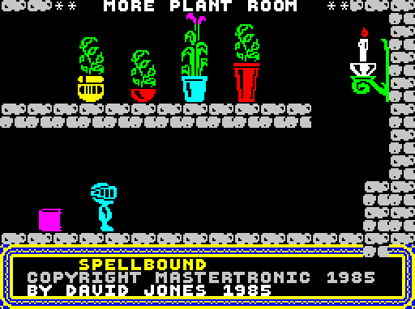
This is caused by the Room Layout Data "instruction" at 53119 which has nine 2x2 blocks of brickwork drawn, one below the other, when only two are
needed. The third block of these nine, which appears at floor-level and extends below, does not persist as the in-game window at the bottom of the
screen immediately overwrites it. Because at this point the room drawing routine is in Vertical Brickwork Direction Mode thanks to the instruction at
53115, the Room Drawing "Cursor" wraps around from bottom to top, so the remaining six blocks are actually superimposed upon the room's right-hand
wall. This can be fixed by changing the room layout data to define a column of blocks of length 2, rather than 9:
POKE 53119,2
You Can Teleport Anywhere!
Many years ago I discovered an interesting teleport-related exploit that could be used to gain access to certain areas of the game earlier than intended
(i.e. right of The Tower, and The Wall). The trick is simple; holding the Teleport Pad and Key, walk right up to a wall that you want to get past, then
drop the Teleport Pad. You will notice that the Teleport Pad's cyan / white attribute will override the attribute of the wall. At this stage, teleport,
and you will materialise partly within the wall, and the cyan / white attribute will extend to Magic Knight's full height. At this stage, it is possible
to walk further into the wall, pick up the Teleport Pad and repeat the process a second time. This time the entire width of the wall will be cyan /
white, allowing Magic Knight free passage to the other side!
Missing Text End Marker
An end marker is missing from the "[CHARACTER] IS TOO TIRED TO HELP YOU" text at 46712. As a result, the following string, "[CHARACTER] HAS NO FOOD
LEFT" at 46718 is interpreted as part of the same text and is concatenated onto the end of the message.
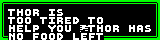
Fast Blow Fuse Removed From Wrong Character
When Rosmar helps at the Secret Tunnel Entrance by placing the Fast Blow Fuse into the Pocket Laser, the former should be removed from her inventory.
Unfortunately the instructions responsible for this try to remove it from Banshee's inventory instead. As a result, Rosmar is still holding the Fuse
after helping.
The instruction at 34092 points HL at 25435 (Banshee's inventory) rather than 25430 (Rosmar's inventory). To fix:
POKE 34093,86
POKE 34094,99
Jump Twice
The two consecutive instructions at 31032 and 31035 are jumps and they are identical to one another. Not really a bug as such but it does seem
strange. This occurs a few times in the routine at 30880.
Always Ready to Help!
Elrand's "Can Help" flag is set when being given an object, regardless of which object it is. This should only happen when he is given the trumpet. This
is caused by a missing JP NZ instruction between 31098 and 31100 to skip over the instructions that set his "Can Help" flag when being given an
object other than the Trumpet.
Consequently, you can for example give Elrand the Advert, and provided Thor has done his bit, Elrand will happily knock down the wall even without his
Trumpet!
Which Room Am I In?
In the routine at 55233 that updates a character's current room if he/she is awake and free to move is a check to determine whether or not that
character's current room is 99 (55305 - 55307). If the room is not 99, the a jump is made to 55319, otherwise the next instruction is executed.
This is a check on whether or not the character's room is 100 with a conditional return afterwards. This conditional return will never occur, however,
because this instruction is only reached if the character's room is 99 (and therefore could never be 100).
Inconsistent Frame Rendering
When Magic Knight jumps vertically, his frame changes. To reproduce, walk left or right, take note of the position of Magic Knight's feet, then jump
upwards - his feet change position.
Starfield Rendering
The instruction at 38823 is "LD C,A", however it appears the correct instruction should be "LD A,C" as we are checking (in A) that the x-component of
a star's direction is non-zero when its y-component has already been checked as zero. As it is, the value in A is not modified from instruction at
38816 where it is set to the y-component. In the existing code, the value of A is set at 38816, then at 38821 a conditional jump occurs if the
value in A is not 87. If the jump does not occur, then the (same) value in A is loaded into C, then another conditional jump occurs only if the
(unchanged) value in A is equal to 128 (which is can't be, because this instruction is only reached if A is 87!)
To fix, change the instruction at 38823 from "LD C,A" to "LD A,C":
POKE 38823,121
This bug is also present in Knight Tyme
Invalid Terrain Interaction Parameters
In the Room Layout Data at 52795 for 3rd Floor 1 (The Library) and Ground Floor 3 (Gimbal's Secret Study), the instruction for drawing the books
(52850) includes a Terrain Interaction Parameter value of 70, instead of 64. This comprises of a Bit 6 for Preserve Attribute, along with Bits 1 and 2
which have no meaning in the context of Terrain Interaction Parameters.
A Powerful Source of Light
The Room-Specific Routine at 29800 that kills Magic Knight if he enters a room without illumination (The Little Bottle / The Big Bottle) returns
without killing Magic Knight if any one of a number of conditions are met:
Magic Knight is holding the Glowing Bottle
The Glowing Bottle is somewhere in the Little Bottle room
Magic Knight is holding the lit Engraved Candle
The lit Engraved Candle is somewhere in the Little Bottle room
Note the conditions regarding objects in the Little Bottle room - these are hard-coded into the routine. But the "Kill Magic Knight in darkness" effect
that happens in the Big Bottle room is facilitated by exactly the same routine. This means that Magic Knight can safely pass through the Big Bottle room
without illumination, as long as there is a source of illumination at the Little Bottle!
Another problem with room drawing can be seen at The Pit. Like in the A Block Too Far bug above, the room drawing routine also draws brickwork blocks
too far down at The Pit. Unlike the previous bug, however, the cause of the issue this time is not due to an error in the room layout data.
The Pit is unique, in that it is the only room in the game where the lowest row of bricks drawn (typically a room's floor) is not defined as a single
stretch of 16 brickwork (or other) blocks drawn in Brickwork Drawing Mode 1 (single row mode). The floor is, in fact, divided up into three sections.
The left and right sections are conventional brickwork, however the middle section is flame.
When drawing the left-most stretch of bottom-row bricks, the room drawing routine is correctly in Brickwork Drawing Mode 1 (as specified by the data at
53739). However the instructions at 28056-28057 cause the Brickwork Drawing Mode to automatically revert to Mode 0 (draw two rows of bricks) after
any stretch of brickwork is drawn. Consequently, the middle flame section and the right-most brickwork sections of The Pit's lowest level are drawn in
Drawing Mode 0. In the case of the flames, this doesn't matter, as the lowest two character blocks in their architecture style (defined at 54677) are
blank, however in the right-most stretch of 6 blocks it does, and 2x2 blocks of brickwork are drawn as a result:
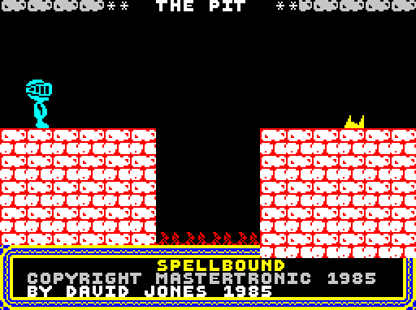
An Unnecessary Instruction
In the routine that processes the command to command a character (31636), the instruction at 31689 loads A with the index of the current (i.e.
commanded) character, however this value is never used.
Trapped in a Wall
As in every other room, there are three character slots at The Wall. Unfortunately the third of these is actually inside The Wall itself:
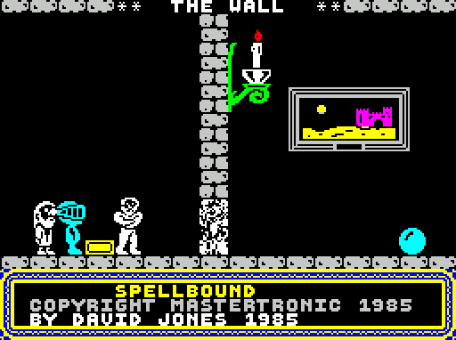
To fix this, the x-coordinate of the third (right-most) slot needs to be reduced slightly:
POKE 54116,12
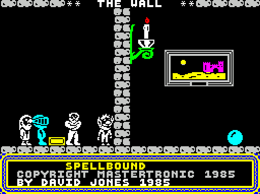
Spelling Errors
"SAXOPHONE" has been spelt "SAXAPHONE" in the texts at 41633 and 48903. To fix:
POKE 41636,79 (change "A" to "O" in Object Names Table at 41236)
POKE 48933,79 (change "A" to "O" in Saxophone's Read-Text)
In the text entry at 45668, "ERUPTS" has been spelt "ERRUPTS".
In the text entry at 47493, "RECIPES" has been spelt "RECIPIES". To fix:
POKE 47628,69 (change "I" to "E")
POKE 47629,83 (change "E" to "S")
POKE 47630,32 (change "S" to " ")
In the text entry at 50006, "SPIRIT" has been spelt "SPIRT".
In the text entry at 54292, "FURTHER" has been spelt "FURTHUR". To fix:
POKE 54298,69 (change "U" to "E")
Graphic Issue
The digit "1" on the Lift Control Panel is misaligned. It seems to be very slightly offset to the right as compared to the other digits:
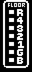
Missing Closing Quote
The Banshee's help text at 44935 contains some speech which is opened, but not closed, with a quote.